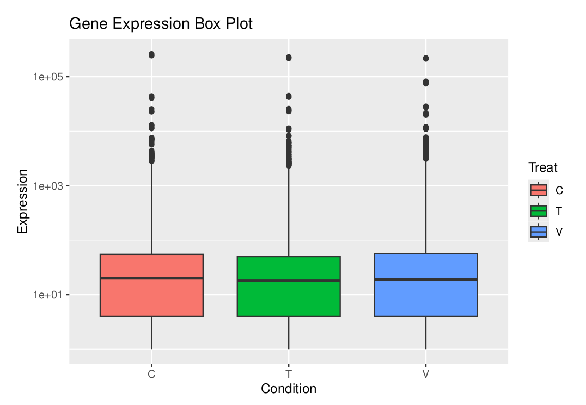

Module 2 Project: RNA-Seq Data Analysis Workflow
1) Cut Adapters
To remove low-quality sequences and adapter contamination, we use a trimming tool. This step ensures that
only high-quality reads are retained, which is crucial for accurate alignment in downstream analysis. Here,
cutadapt is utilized for adapter trimming, which effectively removes unwanted sequences based on specific
adapter patterns.
sbatch trim_reads2.sh INPUT_PATH OUTPUT_PATH2) Align Reads Command
Once the data has been cleaned of adapters, the next step is to align the high-quality reads to a reference
genome. We use hisat2 for this alignment process, as it is specifically optimized for RNA-Seq data. This
alignment step maps each read to its corresponding position in the genome, which is essential for quantifying
gene expression accurately.
sbatch hisat2.sh INPUT_PATH REFERENCE_GENOME_PATH OUTPUT_PATH3) Merge and Sort BAM Files Command
Following alignment, the generated BAM files need to be merged and sorted. This step consolidates all aligned reads, organizing them by genomic position. Sorting is critical for efficient access. We use a merging and sorting script to achieve this.
sbatch sam_merge_sort_bam.sh INPUT_PATH OUTPUT_PATH GTF_FILE4) Quantify Gene Counts Command
Next we quantify gene expression by counting reads that align to each gene. featureCounts is used here to
count the aligned reads for each annotated gene in the reference genome.
sbatch featureCounts.sh INPUT_PATH OUTPUT_PATH GTF_FILE5) Plotting the Gene Expression
The following R script uses tidyverse and ggplot2 for visualizing gene expression:
library(tidyverse)
library(openxlsx)
library(ggplot2)
# Load the data
data <- read.xlsx("/home/flyingnimbus2/Desktop/Module_2/out/genes.xlsx")
data = data[, -1] # remove geneID
head(data)
# Pivot table
data <- pivot_longer(data, names(data))
colnames(data) <- c("Treat", "Expression") # name columns
# Combine replicates
data <- mutate(data, Treat = gsub("\\d", "", Treat))
# Sort
data <- arrange(data, Treat)
head(data)
# Create the box plot
ggplot(data, aes(x = Treat, y = Expression, fill = Treat)) +
geom_boxplot() +
labs(
title = "Gene Expression Box Plot",
x = "Condition",
y = "Expression"
) +
scale_y_log10()
The resulting plot displays gene expression levels categorized by conditions (C, T, V).
